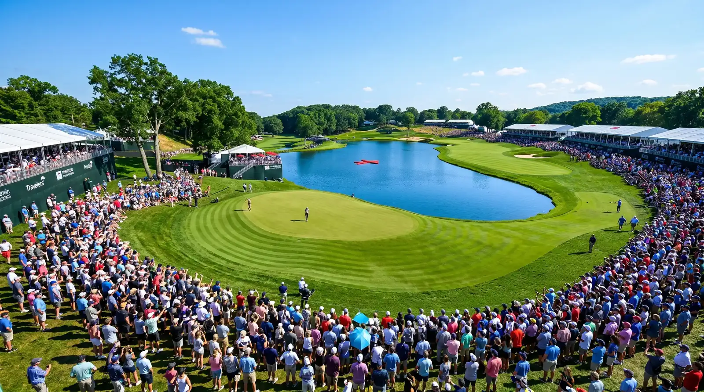

Quick answer: The 2026 Travelers Championship runs June 25 to 28 at TPC River Highlights in Cromwell, Connecticut. It is the PGA Tour's final Signature Event of the season, with a $20 million purse, a $3.6 million winner's share, and a stacked limited field of about 72 players. World No. 1 Scottie Scheffler headlines, Keegan Bradley defends his title, and the betting market opens with Scheffler, Xander Schauffele, and Ludvig Åberg as the favorites. Rory McIlroy is sitting this one out.

Here is the full rundown on the week, the course, and the real storylines, minus the hype.
When and Where Is the 2026 Travelers Championship?
The tournament is June 25 to 28, Thursday through Sunday, at TPC River Highlights in Cromwell, Connecticut. Ticketed fans get on-site starting Wednesday, June 24.
This is the 20th straight year with Travelers as title sponsor, and the course has hosted since the 1980s. It comes the week right after the U.S. Open, so the same stars who just battled Shinnecock make the short trip up to New England for one more big week before the calendar shifts.
What Kind of Event Is It?
The Travelers is a PGA Tour Signature Event, and it is the last one of the 2026 season. That status matters. Signature Events carry bigger purses, smaller and stronger fields, and more FedExCup points, which is why nearly every top player shows up.
The numbers back that up: a $20 million purse, $3.6 million to the winner, and 700 FedExCup points on the line. For comparison, that purse is just under what the majors pay, on a regular tour stop. It is a big week.
Who Is in the Field?
A loaded one. The field includes all but one of the eligible top 50 players in the world. The headliners are:
- Scottie Scheffler (No. 1 in the world)
- Cameron Young (No. 3)
- Matt Fitzpatrick (No. 4)
- Russell Henley (No. 5)
- Justin Rose (No. 6)
- Tommy Fleetwood (No. 7)
- Wyndham Clark (No. 8), fresh off his U.S. Open win
- Collin Morikawa (No. 9)
- Keegan Bradley, the defending champion
The one big absence is Rory McIlroy, the world No. 2, who is skipping the Travelers as part of a lighter 2026 schedule. The field is capped at around 72 players with no cut for most of the week, so every name in it has a real shot at the weekend.
Who Is the Defending Champion?
Keegan Bradley won the 2025 Travelers, and he did it in style for the local crowd. The New England native edged Tommy Fleetwood, sealing it with a clutch birdie putt on the final hole. It was his second win at this event in three years, so he arrives with both confidence and home support behind him.
Defending here will not be easy in a field this deep, but Bradley clearly loves the place, and TPC River Highlights rewards players who know its quirks.
Who Are the Betting Favorites?
The market opened with three names at the top: Scottie Scheffler, Xander Schauffele, and Ludvig Åberg as the favorites. None of that should surprise anyone. Scheffler is the best player in the world and a past Travelers winner, Schauffele is a model of consistency, and Åberg is one of the most talented ball-strikers in the game.
Betting favorites are just the market's best guess, not a prediction you should treat as gospel.
A quick honest word on odds, though. Betting favorites are just the market's best guess, not a prediction you should treat as gospel, and this is a tour event where a dozen players could realistically win. Plenty of past Travelers champions came from well down the odds board. If you follow the betting, treat it as information, not a sure thing, and never bet more than you would be fine losing.
What Is TPC River Highlights Like?
It is a par-70 layout of about 6,844 yards, which is short by modern PGA Tour standards. That length, or lack of it, shapes everything. This is not a bomber's paradise where the longest hitters overpower the course. It is a precision test that rewards sharp iron play and hot putting, and it tends to produce low scores and dramatic finishes.
The closing stretch is famous for chaos. The course gives up birdies and eagles late, so leads rarely feel safe, and Sunday afternoons here have a habit of turning into a shootout. Last year's winning score was 15 under, which tells you scoring can get deep.
Why Does This Week Feel Different From a Major?
Because the pressure valve just released. The U.S. Open is a survival test where par is a great score and the setup is built to break players. The Travelers is the opposite vibe: a fan-friendly, birdie-filled week on a course the players know well, with an electric Connecticut crowd that ranks among the loudest on tour.
After the grind of Shinnecock, this is the week where the best players can swing freely and go low. It is golf as entertainment rather than golf as punishment, and that contrast is a big part of why players and fans love it.
How Can I Watch the 2026 Travelers Championship?
Coverage is split across TV and streaming:
- Golf Channel: early-round coverage Thursday and Friday, plus early weekend windows
- NBC: the main weekend coverage, Saturday and Sunday afternoons
- Peacock and ESPN+ (PGA Tour Live): streaming, including early featured-group coverage before the TV windows open
If you want the very start of the action, the streaming feeds on ESPN+ kick off in the morning, well before the TV broadcasts.
The Raw Read
The Travelers is one of the more honest fun weeks on the schedule. No brutal major setup, no five-over winning scores, just a short, clever course, a great crowd, and most of the best players in the world trying to make a pile of birdies. Scheffler is the deserved favorite, Bradley has the home edge, and a short course with a wild finish means an upset is always live.
If you bet, keep your head about the odds and the model picks floating around this week. Those are guesses dressed up as certainty, and a limited field on a birdie-fest course is exactly where surprises happen. Watch it for the golf first. The Travelers usually delivers a finish worth staying up for.
Frequently Asked Questions
When is the 2026 Travelers Championship?
June 25 to 28, Thursday through Sunday, at TPC River Highlights in Cromwell, Connecticut.
What is the purse for the 2026 Travelers Championship?
$20 million total, with a $3.6 million winner's share, as a PGA Tour Signature Event.
Who is the defending champion?
Keegan Bradley, who won the 2025 Travelers by edging Tommy Fleetwood.
Who are the favorites to win?
The betting market opened with Scottie Scheffler, Xander Schauffele, and Ludvig Åberg as the top favorites.
Is Rory McIlroy playing?
No. McIlroy is skipping the 2026 Travelers as part of a lighter schedule.
How can I watch the Travelers Championship?
On Golf Channel and NBC for TV, with streaming on Peacock and ESPN+ via PGA Tour Live.